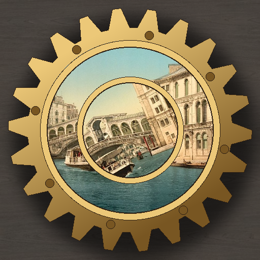

<- all projects

Clockwork Postcards
PC
Volume
Live
Turn the gears, and each card comes to life.
Behind Grandma's hall clock, stopped since 1899, you find a tin of twenty postcards from great-great-uncle Tobias, the clockmaker. Each has a tiny brass mechanism set into it: rings to turn, stamps to slide, linked gear panels, map routes and a cipher wheel. Line everything up and the picture comes alive before the card turns over to show his letter. The postcards are real photochrom prints from around 1890 to 1905, from Venice to the Norwegian fjords. They follow Tobias across Europe after his best clock design was stolen, and the last card explains why he never came home.